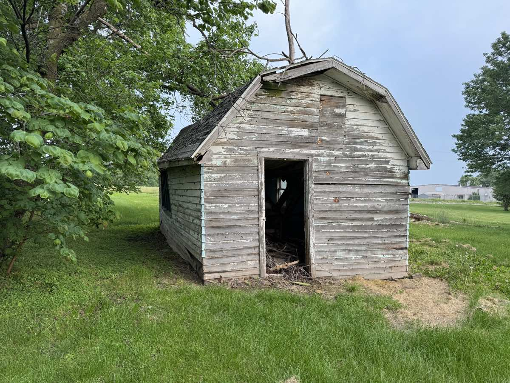

If you've got a sagging shed or an old deck that needs to go, here's the short answer on shed and deck removal in Columbia, MO: most jobs run $300 to $2,500 depending on size, what it's built from, and how hard it is to get a truck close to it. Small jobs are often a few hours. The price always includes hauling the debris off.
I'm Chris Kurtz, owner of Atlas Excavation & Demolition. We tear out sheds, decks, porches, and small outbuildings all over Columbia, MO and the rest of Mid-Missouri. This post lays out what the work actually costs, what drives the price up or down, the permit question, and how the cleanup works so you're not left with a pile.
Quick Answer: Shed and deck removal in Columbia, MO usually runs $300 to $1,500 for a shed and $500 to $2,000 for a deck. Size, materials, whether there's a concrete slab or footings to break out, and access all move the number. Every job includes tearing the structure down, hauling the debris off, and leaving the spot clean and graded. Most are done in a day. Call Atlas at (573) 234-6641 or get a free on-site walkthrough.
In This Guide:
What Shed and Deck Removal Costs in Columbia, MO
These are the real ranges we see on shed and deck removal around Columbia. They're small jobs compared to a house teardown, but the price still swings based on size, materials, and access. Here's where most jobs land.
| Structure | What It Covers | Typical Cost |
|---|---|---|
| Small shed (metal or vinyl) | Disassemble, load, haul off, cleanup | $300 to $700 |
| Large wood shed / outbuilding | Tear down, haul off, slab broken out if needed | $700 to $1,500 |
| Ground-level deck | Boards and framing removed, hauled, footings optional | $500 to $1,200 |
| Large raised / multi-level deck | Full teardown, footings dug or broken, haul off | $1,200 to $2,000 |
A shed sitting on bare ground or skids is the cheapest thing we remove. Add a concrete slab underneath and the price climbs, because breaking out and hauling concrete is its own job. That's the same work we do on standalone concrete removal projects, so we often roll the slab into the shed price. Same with decks, a ground-level deck on simple piers comes apart fast, while a tall deck bolted to the house with poured footings takes more time and muscle. If what you're removing is attached to the house rather than freestanding, that's a different job, and our guide to partial demolition in Columbia, MO covers chimneys, covered porches, and additions.
What Drives the Price Up or Down
When I look at a shed or deck, four things tell me what the job will cost.
- Size. Obvious, but it's the biggest factor. A 6x8 storage shed and a 16x24 barn-style outbuilding are two very different jobs.
- What it's built from. Metal and vinyl sheds come apart quickly. Heavy timber, brick bases, and decks with composite boards and steel hardware take longer to break down and load.
- What's underneath. Bare ground is easy. A poured slab or concrete footings mean extra breaking and hauling. If you want those gone too, that's part of the price.
- Access. If I can back a dump truck and a small machine right up to the structure, the job is fast and cheap. If everything has to be carried out by hand through a narrow gate, that's added labor.
One more thing that adds time: junk left inside. A lot of old sheds are packed with rotted tools, paint cans, and yard equipment. We can clear it out, but it adds to the load and sometimes the disposal cost, so it helps to know that going in.
Quick tip: if your shed or deck removal is part of a bigger cleanup, say you're also pulling a fence or clearing a back lot, bundle it. We can knock out several small jobs in one trip, which usually saves you money over hiring them out one at a time.
The Shed and Deck Removal Process, Step by Step
Here's what shed and deck removal actually looks like once you give the go-ahead, so there are no surprises in your backyard.
- Free walkthrough and price. I look at the structure, what it's made of, what's under it, and your access. You get a flat written price, no hourly guessing.
- Permit check. If the structure is big enough or attached to the house to need a permit, we confirm it and pull it before we start.
- Disconnect anything live. Power run out to a shed, or a gas line to an outdoor setup, gets cut and capped safely first.
- Tear it down. The shed or deck comes apart, by hand or with a machine depending on size, and the material is sorted as we go.
- Break out the base. If there's a slab or footings you want gone, we break them out and load them too.
- Haul it off. Every bit of it gets loaded and taken to the proper disposal site. Nothing is left behind for you to deal with.
- Grade and clean up. We level the spot, rake it out, and leave it ready for grass, a new build, or whatever's next.
That last step is the one people remember. The difference between a real demolition crew and a couple guys with a trailer is what the spot looks like when they leave. We don't leave ruts, nails, or a half-filled hole. If something new is going in that spot, we can coordinate site preparation so the pad is graded and ready.
Got a Shed or Deck That Needs to Go?
Atlas gives you a flat written price after a free on-site walkthrough. We tear it down, haul it off, and leave the spot clean. No surprise dump fees.
Get Your Instant Estimate Or Call (573) 234-6641Permits and Debris Rules in Columbia and Boone County
Whether you need a permit depends on the structure. A small storage shed usually doesn't need a demolition permit in Columbia, but a larger outbuilding or a deck attached to the house can. The thresholds are set by the City of Columbia and Boone County, and they do change, so it's worth checking rather than assuming. You can confirm current requirements with the City of Columbia building and site development office, or we'll just handle it for you as part of the job.
The other piece is debris. You can't always toss old deck lumber and shed siding in with your regular trash, and treated wood and certain materials have disposal rules. That's why hauling is built into what we do. We take it to the right place so you're not stuck with a pile or a bill from the curb. For a deeper look at how that side works, see our guide on demolition debris disposal in Columbia, MO.
DIY vs. Hiring It Out
Plenty of folks tear down a small shed themselves, and for a little metal one on bare ground, that's a fine Saturday project. Where it stops being worth it is the hauling. Renting a dumpster, paying the dump fees, and making multiple runs in a pickup adds up fast, and you're doing the heavy, dusty work yourself.
Decks are where DIY tends to go sideways. The boards come up easy enough, but the framing, the bolts, and especially the footings are slow, hard work, and a raised deck has real fall risk during teardown. By the time you've rented a dumpster and a couple tools and spent a weekend on it, hiring it out often costs about the same and takes a few hours instead. If the structure is big, attached to the house, or sitting on concrete, hiring it out is almost always the smarter call.
Where We Handle Shed and Deck Removal
Atlas does shed and deck removal across Columbia, Ashland, Harrisburg, Hallsville, Boonville, Fulton, Centralia, Rocheport, and the rural parts of Boone, Audrain, Callaway, Cole, Howard, Cooper, and Moniteau counties. Anywhere within about 45 minutes of Columbia, we'll come look at it.
Mid-Missouri weather plays into these jobs more than people expect. Our heavy clay turns to soup after a good rain, and dragging a machine across a soft yard tears it up. When the ground's wet, we plan access carefully or wait a day so we're not leaving you with a rutted lawn to repair. Small thing, but it's the kind of detail that separates a clean job from a mess.
Frequently Asked Questions
How much does shed removal cost in Columbia, MO?
Most shed removals in Columbia, MO run $300 to $1,500. A small metal or vinyl storage shed on a slab is at the low end. A large wood shed or one on a poured foundation, with old junk still inside, lands higher. The price covers tearing the shed down, loading it, hauling it off, and cleaning up the spot. Things that move the number are size, what the shed is built from, whether there is a concrete slab to break out, and how easy it is to get a truck and machine close to it. The only way to get a firm figure is to look at it, which we do for free.
How much does it cost to tear down a deck?
Deck removal around Columbia usually runs $500 to $2,000. A small ground-level deck is cheaper. A large raised deck with footings, railings, and built-in benches takes more labor and hauling. The price includes pulling the boards, cutting up the framing, digging or breaking the footings if you want them gone, and hauling everything off. Composite and treated lumber both go to the same place, the dump, so material does not change the disposal much. Access matters most. If we can back a truck up to the deck, it goes fast. We give you a flat written price after a quick look.
Do I need a permit to remove a shed or deck in Columbia?
It depends on the structure. A small storage shed under a certain size usually does not need a demolition permit in Columbia, but a larger outbuilding or a deck attached to the house can. Boone County and the City of Columbia each have their own thresholds, and the rules can change. If a structure is on a permanent foundation or tied to the home, assume a permit may be needed and check before you start. Atlas confirms the requirement and pulls any permit as part of the job, so you are not guessing or risking a fine.
Will you haul away the debris?
Yes. Hauling is included in every shed and deck removal we do. That is the whole point of hiring it out instead of renting a dumpster and doing it yourself. We tear the structure down, load every bit of it, and take it to the proper disposal site. You are not left with a pile of broken lumber and rusty metal to deal with. When we leave, the spot is clean and graded flat, ready for grass, a new build, or whatever you have planned. No surprise dump fees tacked on at the end either, since the price we quote includes disposal.
How long does shed or deck removal take?
Most shed and deck jobs are a single day, often just a few hours. A small shed or ground-level deck can be down and hauled off in a morning. A large outbuilding, a raised multi-level deck, or a job that includes breaking out a concrete slab can run a full day or stretch into a second. Weather can push things, since wet clay around Columbia makes it harder to get a machine in and out without tearing up the yard. We give you a realistic window when we quote it, and these small jobs rarely drag on.
Get a Real Price From Atlas
If you've got a shed, deck, or small outbuilding in Columbia or anywhere in Mid-Missouri that needs to come down, we're glad to come look at it and put a flat written price in front of you. No pressure, no surprise fees.
- Phone: (573) 234-6641
- Email: hello@deployatlas.com
- Online: Instant estimate form
For related reading, see our garage demolition cost guide, our full demolition cost guide for Columbia, Missouri, and our overview of demolition services in Mid-Missouri.